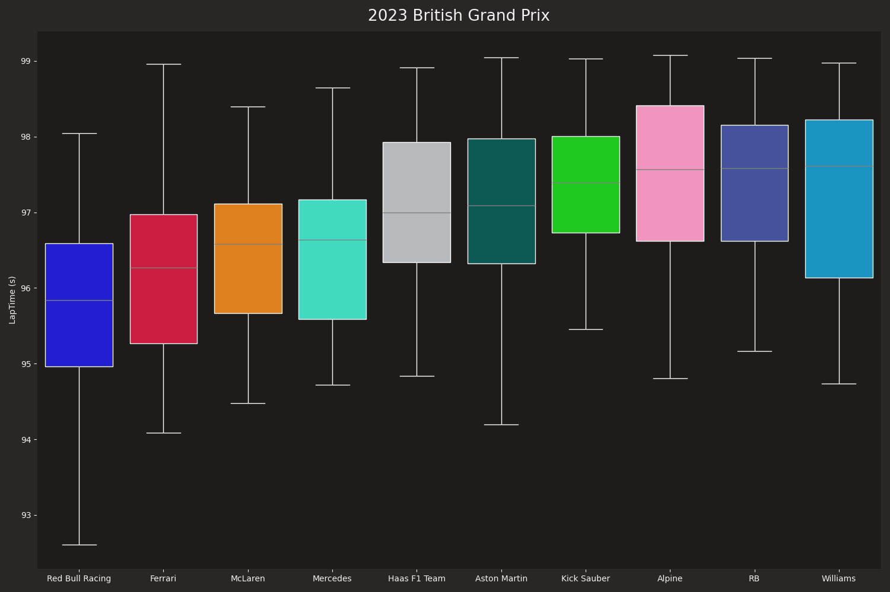

Note
Go to the end to download the full example code.
Team Pace Comparison¶
Rank team’s race pace from the fastest to the slowest.
import seaborn as sns
from matplotlib import pyplot as plt
import fastf1
import fastf1.plotting
# Load FastF1's dark color scheme
fastf1.plotting.setup_mpl(mpl_timedelta_support=False, misc_mpl_mods=False,
color_scheme='fastf1')
Load the race session. Pick all quick laps (within 107% of fastest lap). For races with mixed conditions, pick_wo_box() is better.
race = fastf1.get_session(2024, 1, 'R')
race.load()
laps = race.laps.pick_quicklaps()
Convert the lap time column from timedelta to integer. This is a seaborn-specific modification. If plotting with matplotlib, set mpl_timedelta_support to true with plotting.setup_mpl.
transformed_laps = laps.copy()
transformed_laps.loc[:, "LapTime (s)"] = laps["LapTime"].dt.total_seconds()
# order the team from the fastest (lowest median lap time) tp slower
team_order = (
transformed_laps[["Team", "LapTime (s)"]]
.groupby("Team")
.median()["LapTime (s)"]
.sort_values()
.index
)
print(team_order)
# make a color palette associating team names to hex codes
team_palette = {team: fastf1.plotting.get_team_color(team, session=race)
for team in team_order}
Index(['Red Bull Racing', 'Ferrari', 'McLaren', 'Mercedes', 'Haas F1 Team',
'Aston Martin', 'Kick Sauber', 'Alpine', 'RB', 'Williams'],
dtype='object', name='Team')
fig, ax = plt.subplots(figsize=(15, 10))
sns.boxplot(
data=transformed_laps,
x="Team",
y="LapTime (s)",
hue="Team",
order=team_order,
palette=team_palette,
whiskerprops=dict(color="white"),
boxprops=dict(edgecolor="white"),
medianprops=dict(color="grey"),
capprops=dict(color="white"),
)
plt.title("2023 British Grand Prix")
plt.grid(visible=False)
# x-label is redundant
ax.set(xlabel=None)
plt.tight_layout()
plt.show()

Total running time of the script: (0 minutes 2.698 seconds)